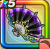

じげんりゅうの闘扇
攻略班 8.0点 / かまいたちスライムブロウブレスの極意閃光バズーカかがやくいき次元跳躍
くわしい特徴
【レベル別習得スキル】 Lv1【レンジャー】きようさ+10 Lv1【海賊】守備力+5 Lv1かまいたち（消費MP：5）エレメント系に威力180%それ以外の系統には130%の体技ダメージを与える Lv10スライムブロウ（消費MP：5）敵全体のスライム系に威力180%それ以外の系統には110%の斬撃ダメージ Lv15ブレスの極意（消費MP：25）自分のブレス攻撃の威力を2段階上げる Lv20閃光バズーカ（消費MP：22）敵1体にイオ属性のブレス特大ダメージを与え、たまに幻惑状態にする Lv30かがやくいき（消費MP：40）敵全体にヒャド属性のブレス特大ダメージを与える Lv35スライム系へのダメージ+5% Lv40ドラゴン系へのダメージ+5% Lv45攻撃力+12 Lv50次元跳躍（消費MP：6）戦闘開始時に発動し、2ターン自身のみかわし率を2段階アップさせる 【限界突破スキル】 1凸スキルの斬撃・体技・ブレスダメージ+5% 2凸スキルの斬撃・体技・ブレスダメージ+5% 3凸スキルの斬撃・体技・ブレスダメージ+5% 4凸スキルの斬撃・体技・ブレスダメージ+5%